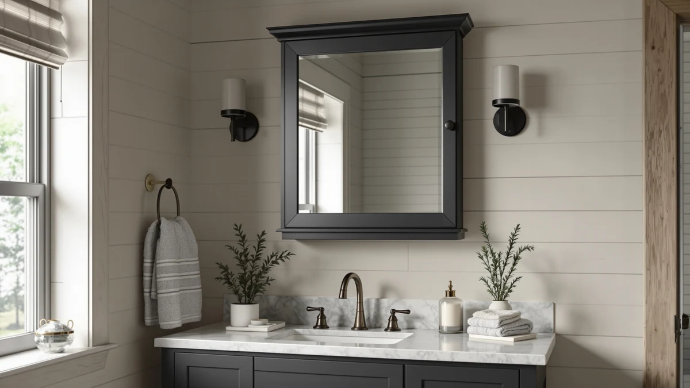

Best Magnifying Medicine Cabinets of 2026: 7 Top Picks
Prices and picks verified as of August 2026. Independent, reader-supported reviews.


Quick Answer
The best magnifying medicine cabinets are nearly extinct as single units, so we recommend building the function from two parts instead. Start with the VESAUR Professional 8.5-inch lighted makeup mirror for close-up work, then add one of the six LED wall mirrors below for your main view. The pairing can cost less than $110 total.
Our pick: Professional 8.5" Large Lighted Makeup at $59.99 Check Price on Amazon
Bottom line: our top pick is the Professional 8.5" Large Lighted Makeup Mirror with Brighter at $59.99. The best budget option is the LED Bathroom Mirror at $42.99.
Things to Know Before You Buy
- Combined units are scarce. Manufacturers have mostly stopped building medicine cabinets with integrated magnifying panels, so this guide pairs a dedicated magnifying mirror with LED wall mirrors that cover the main view.
- Match magnification to the task. 3x to 5x works for shaving and general grooming, while 8x to 10x suits tweezing and detail work but shrinks the area you can see at once.
- Measure before you buy. The wall mirrors here run from 16 by 24 inches up to a 60-by-36-inch panel, and a mirror wider than your vanity looks off-balance.
- Plan for power. LED mirrors need either a junction box behind the wall or a nearby outlet, so check your wiring before committing to a lit model.
- Materials are consistent. All seven picks use tempered glass with aluminum framing, which handles bathroom humidity far better than the particleboard in cheap cabinets.
If you have been searching for the best magnifying medicine cabinets, you have probably noticed the category is nearly empty. Manufacturers quietly abandoned the built-in magnifying panel years ago, and the few combined units still sold tend to pair mediocre storage with a small, dim magnifier. We took a different route for this guide, and we think you should too.
The setup that works better costs less: a dedicated lighted magnifying mirror stationed at your vanity, plus a proper LED wall mirror doing the job the cabinet door used to do. We compared lighted makeup mirrors and LED bathroom panels across the full price range for this roundup. We checked dimension claims against owner photos and weighed each price against what the unit delivers.
The VESAUR Professional 8.5-inch Large Lighted Makeup mirror took our top spot at $59.99 because it handles the close-up half of the equation better than any cabinet panel we found. Six LED wall mirrors round out the guide, from the $44.99 WARM&LOVE at 16 by 24 inches up to the 60-by-36-inch YEELAIT at $299.99. Skim the comparison table below if you already know what size wall you are working with.
Why You Should Trust Us
I am Ilane Tall, and I run Best Bathroom Mirrors, where I have cataloged and compared bathroom mirrors, medicine cabinets, and vanity lighting since the site launched. Researching this magnifying medicine cabinet guide meant sorting through a category full of discontinued models and rebadged imports, which is exactly the kind of legwork this site exists to do for you.
Nobody pays us for placement in these guides. The links are affiliate links, which means we may earn a commission if you buy through them, but the commission rate is identical across picks and had no bearing on the order you see here.
How We Picked
We started from the problem a magnifying medicine cabinet is supposed to solve: you need a close-up view for detail work and a full view for the rest of your routine, in one spot at the sink. That framing let us drop the compromised combo units and evaluate the two halves separately. For the magnifying side, we wanted a lighted unit with a large viewing surface at a sane price. For the wall side, we required tempered glass, aluminum framing, and a size range that covers a powder room up to a double vanity.
Price discipline shaped the final list. The seven picks run from $44.99 to $299.99, and each one had to beat cheaper alternatives on something concrete, like brighter lighting or a two-for-one price. Units with repeated shipping-damage complaints, or dimensions that owners disputed in reviews, did not make the shortlist.
How We Compared
We can only recommend what we can verify, so our process for this magnifying medicine cabinet roundup leaned on cross-checking rather than marketing claims. We compared each listing's stated dimensions against measurements owners posted in reviews, and examined customer photos for frame gaps and LED hot spots. We also tracked prices over several weeks to flag inflated list prices dressed up as discounts.
We also read one-star and two-star reviews in bulk for each pick, looking for patterns rather than one-off complaints. A single report of a cracked mirror means rough shipping. Twenty reports means bad packaging, and that unit gets cut. The seven products below survived that filter.
Our Picks

Professional 8.5" Large Lighted Makeup
What we like
- 8.5-inch surface gives a wider close-up view than typical compact magnifiers
- Built-in lighting works in bathrooms with weak overhead fixtures
- At $59.99, it undercuts the price of the combined cabinet units we researched
Flaws but not dealbreakers
- Needs its own spot on the counter or wall beside your main mirror
- Offers no storage, so it solves only half of what a cabinet does
| Material | Tempered glass + aluminum |
| Size | 15.6"L x 8.5"W |
The VESAUR Professional 8.5-inch Large Lighted Makeup mirror is our pick because it does the one thing people want from a magnifying medicine cabinet, and does it without the compromises. The 15.6-by-8.5-inch build in tempered glass and aluminum matches the material quality of wall mirrors twice its price, and the lighted panel means you stop leaning over the sink chasing the overhead light at the correct angle. Detail work like tweezing, precision shaving, and skincare checks happens at the vanity instead of six inches from the glass.
You give up storage, and that is the honest trade. Our advice: keep the medicine cabinet you have, or pick one from our storage cabinet guide, and let the VESAUR handle magnification beside it. At $59.99 the pairing still lands under what most combined units charged before they left the market.

USHOWER 2-Pack Black Bathroom Mirrors
What we like
- Two 24-by-36-inch mirrors for $139.99 works out to $70 apiece
- Black aluminum frames suit modern and farmhouse rooms alike
- Tempered glass at a size that fits standard single-sink spacing
Flaws but not dealbreakers
- No lighting, so your overhead fixtures carry the whole job
- A pair is more mirror than a single-sink bathroom needs
| Material | Tempered glass + aluminum |
| Size | 24"Lx36"W-2pcs |
The USHOWER 2-Pack earns the runner-up slot on arithmetic. Most framed 24-by-36-inch bathroom mirrors sell for $80 to $100 each, and USHOWER hands you two for $139.99. If you are outfitting a double vanity and mounting a magnifying mirror between the sinks, this pair plus the VESAUR builds the full magnifying medicine cabinet replacement for right around $200, matched frames included.
The catch is light. These are plain framed mirrors, and a dim bathroom stays dim after you hang them. Owners with strong vanity fixtures will not care. If your bathroom depends on a single ceiling bulb, one of the LED picks below serves you better, and our double vanity guide covers more paired options.

JOHALXER LED Bathroom Mirror 20x28
What we like
- LED lighting at $45.99 undercuts most lit competitors
- 20-by-28-inch size fits above nearly any single sink
- Aluminum frame and tempered glass at a plastic-frame price
Flaws but not dealbreakers
- Too small to anchor a wide vanity wall on its own
- Requires power at the mounting point like any LED mirror
| Material | Tempered glass + aluminum |
| Size | 28"L x 20"W |
The JOHALXER 20x28 is the pick we point to when someone wants the lit half of a magnifying medicine cabinet setup for the least money. At $45.99 it costs about a third of what the larger LED panels in this guide run, and the 28-by-20-inch surface still covers the standard view over a single sink. Tempered glass and an aluminum frame keep it from feeling like a budget product in hand, which is not a given at this price.
Size is the limit. On a 48-inch or wider vanity the JOHALXER looks undersized, and no LED setting fixes proportions. Measure your wall first. If you have more than 40 inches of width to fill, step up to the LOAAO or the Delma below and spend the difference on scale rather than features.

LOAAO 24X32 LED Bathroom Mirror
What we like
- 32-by-24-inch lit surface at $89.99 beats most same-size rivals
- Big enough to anchor a standard single vanity by itself
- Tempered glass and aluminum build matches pricier panels
Flaws but not dealbreakers
- Costs almost double the JOHALXER if basic lighting is all you need
- Installation needs wiring or an outlet behind the mounting wall
| Material | Tempered glass + aluminum |
| Size | 32"L x 24"W |
The LOAAO 24X32 is the budget route to a mirror that reads as a centerpiece. The 32-by-24-inch panel fills the wall over a standard vanity, and at $89.99 it stays under the line where LED mirrors start competing with furniture budgets. Combined with the VESAUR for close-up work, you have replaced everything a magnifying medicine cabinet promised for about $150, and both pieces outclass the glass in the combo units we researched.
Plan the power connection before ordering, since relocating a junction box costs more than the mirror itself. And check the size math: buyers who need less width can save $44 with the JOHALXER without losing the LED feature, so the LOAAO earns its price only when your wall gives it room to work.

LED Bathroom Mirror 16 x
What we like
- Lowest price in the guide at $44.99
- 16-by-24-inch footprint fits walls the other picks overwhelm
- Same tempered glass and aluminum construction as the larger panels
Flaws but not dealbreakers
- Too small as the only mirror over a full-size vanity
- Modest size means modest light output for the room
| Material | Tempered glass + aluminum |
| Size | 24"L x 16"W |
The WARM&LOVE 16-by-24-inch LED mirror wins the small-space slot. Guest bathrooms and powder rooms rarely warrant a $150 mirror, and this one delivers the lit-glass look for $44.99, the lowest price on this list. Hung vertically beside a compact magnifying mirror, it covers a scaled-down version of the magnifying medicine cabinet arrangement in spaces the bigger picks would swallow whole.
Keep expectations scaled to the size. A 16-inch-wide panel lights your face at the sink, and it stops there. Buyers hoping to brighten an entire bathroom with mirror LEDs alone will find that no size manages it, and this one least of all. Treat the light as a task feature and the price makes sense.

Delma LED Bathroom Mirror with
What we like
- 55-inch width spans counters that would otherwise need two mirrors
- One wide panel avoids the visual seam of a mirror pair
- Tempered glass matters more for safety at this surface area
Flaws but not dealbreakers
- At $159.99 it costs more than the USHOWER two-pack
- Shipping a 55-inch glass panel raises the stakes on delivery damage
| Material | Tempered glass + aluminum |
| Size | 30"L x 55"W |
The Delma answers a specific layout problem: a long vanity with one sink, where a pair of mirrors looks wrong and a 32-inch panel looks lost. Its 55-by-30-inch lit surface treats the whole counter as one composition. Positioned with a magnifying mirror at one end, it produces the cleanest version of the magnifying medicine cabinet substitute in this guide, with no frame seam interrupting the wall.
The $159.99 price sits mid-pack, but the risk profile differs from the smaller mirrors. A panel this size demands two people for mounting and a careful unboxing, since transit damage is the complaint that dominates reviews of oversized mirrors as a category. Inspect the glass fully before your return window closes.

YEELAIT 60x36 Inch LED Bathroom
What we like
- 60-by-36-inch surface turns the vanity wall into one lit panel
- Replaces a mirror pair and a light fixture in a single install
- Tempered glass and aluminum at a scale where cheap builds fail
Flaws but not dealbreakers
- At $299.99 it costs more than the VESAUR and LOAAO combined
- Weight and wiring push most buyers toward professional installation
| Material | Tempered glass + aluminum |
| Size | 60"L x 36"W |
The YEELAIT 60x36 is the pick for people finishing a bathroom rather than patching one. Sixty inches of lit glass spans a full double vanity, and the scale changes how the room reads in a way smaller mirrors cannot. Add a magnifying mirror at either sink and you have built the deluxe version of the magnifying medicine cabinet replacement, with a field of view no cabinet door offered.
Commit with clear eyes. The $299.99 price is the highest here, hanging a panel this heavy is a two-person job at minimum, and you should hand the power connection to an electrician unless you work with junction boxes regularly. Budget for installation as part of the purchase, not an afterthought.
Quick Comparison
| Product | Material | Price | Rating | Best for | Get it |
|---|---|---|---|---|---|
| Professional 8.5" Large Lighted Makeup | Tempered glass + aluminum | $59.99 | 4 | Magnifying close-up work | View on Amazon → |
| USHOWER 2-Pack Black Bathroom Mirrors | Tempered glass + aluminum | $139.99 | 4 | Double vanities | View on Amazon → |
| JOHALXER LED Bathroom Mirror 20x28 | Tempered glass + aluminum | $45.99 | 4 | Budget LED lighting | View on Amazon → |
| LOAAO 24X32 LED Bathroom Mirror | Tempered glass + aluminum | $89.99 | 4 | Large lit panel under $100 | View on Amazon → |
| LED Bathroom Mirror 16 x | Tempered glass + aluminum | $44.99 | 4 | Powder rooms | View on Amazon → |
| Delma LED Bathroom Mirror with | Tempered glass + aluminum | $159.99 | 4 | Wide single-sink counters | View on Amazon → |
| YEELAIT 60x36 Inch LED Bathroom | Tempered glass + aluminum | $299.99 | 4 | Full-wall installs | View on Amazon → |
Do magnifying medicine cabinets still exist as a single unit?
A few combined units remain on the market, but the major cabinet brands have dropped the built-in magnifier, and the remaining models pair weak magnification with low-grade storage boxes.
What magnification level do I need for a bathroom mirror?
Match the strength to the task.
The Competition
We looked hard for true magnifying medicine cabinets before settling on the pairing approach, and the category earned its dismissal. The combined units still listed tend to come from unnamed brands with thin review histories, and the recurring complaints follow a pattern: small magnifier panels mounted at awkward heights, and particleboard boxes that swell in humidity. Most of them also cost more than our top two picks combined. None met the material standard the seven products above share.
Among LED mirrors, we cut several panels that undercut the LOAAO on price but drew repeated complaints about LED strips failing within the first year. A lit mirror with a dead strip is a worse product than a plain mirror, since the dark diffuser band stays visible on the glass. We also passed on backlit-only designs, which throw a pleasant halo on the wall but leave your face dimmer than front-lit panels at the same wattage.
Plain framed mirrors beyond the USHOWER pair fell to arithmetic. Singles at $80 to $90 could not compete with a two-pack at $139.99, and none of them offered a feature the pack lacks.
Verdict
Our search for the best magnifying medicine cabinets ended with a two-part answer, and VESAUR supplies the half that matters most. The Professional 8.5-inch Large Lighted Makeup mirror covers the close-up work for $59.99, and any LED panel above completes the setup, with the $89.99 LOAAO as the value pairing and the YEELAIT as the showpiece. Buy the two pieces separately and you get better glass and brighter light than any combined cabinet we could find, and you pay less for the pair.
Frequently Asked Questions
Do magnifying medicine cabinets still exist as a single unit?
A few combined units remain on the market, but the major cabinet brands have dropped the built-in magnifier, and the remaining models pair weak magnification with low-grade storage boxes. You get better glass, better light, and a lower total price by pairing a dedicated magnifying mirror like the VESAUR with a standard LED wall mirror.
What magnification level do I need for a bathroom mirror?
Match the strength to the task. 3x to 5x covers shaving and general grooming while keeping most of your face in view. 8x to 10x helps with tweezing and skincare detail but narrows the visible area to a small patch, so it frustrates people who buy it for everyday use. If you are unsure, start lower.
Can I mount a magnifying mirror next to an LED wall mirror?
Yes, and that placement is the core recommendation of this guide. Mount or stand the magnifying mirror at the end of the vanity nearest your usual spot, at roughly eye level when you lean in. Keep it clear of the LED mirror frame so both stay usable, and check that its spot has an outlet if you choose a lighted model.